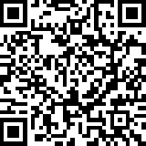

COVID-19 nám zmenil plány
Túto jednoduchú aplikáciu som napísal počas pár večerov pre polovičku a rozhodol som sa ju zverejniť aby som prispel k zlepšeniu situácie, v týchto náročných časoch.
Funkcionalita
Aplikácia umožňuje pomocou webkamery/telefónu načítať bločky na základe ich QR kódu a následne ich exportovať do formátu, z ktorého ich môžete načítať do svojho účtovného software. Pre získanie dát bločku, aplikácie využíva rovnaký endpoint ako aplikácia Over doklad Financnej správy.
Aktuálne aplikácia podporuje export dokladov do:
- MRP K/S XML v2.0
- podľa http://faq.mrp.cz/faqcz/obrazky/jkimage/mrpks_xml_2_0_doc_pk.txt
Návod na použitie
V prvok kroku zadajte identifikator podla ktorého viete bločky idetifikovať. Napr. názov spoločnosti a mesiac?
Príklad: AjetoFebruar
Následne kliknite na tlačidlo "Zahájiť skenovanie".
V ďalšom kroku už len nasnímajte bločky telefónom/webkamerou. Po úspešnom rozoznaní identifikátora bločku a získaní dát bločku sa zobrazí jeho hodnota na pár sekúnd pod oknom s QR kodom a idete na ďalší bloček. Dáta sa ukladajú lokálne vo Vašom internetovom prehliadači.
Keď ste naskenovali posledný bloček, kliknite na tlačidlo ukončit skenovanie. Zobrazia sa štatistiky ako počet úspešne a neúspešne naskenovaných bločkov, zvolíte si formát výstupu a kliknete na tlačidlo exportovať.
Po úspešnom exporte a uložení súboru s exportom na vasom zariadení, pokračujte vyčistením exportovaných dát z Vášho internetového prehliadača, kliknutím na tlačidlo "Vyčistiť spracované položky"
Kto uzná za vhodné, môže prispieť tu:
V BTC: 3JBhhdvwfSVJtMwwVWbgJRdgqPpjV5WkQ4 
V LTC: MJmBxjTtnTpwcKeuo3JkTeRbbhTUwVasYU
Ďakujem!
Technické detaily
Aplikácie je plne client-side a využíva:
Som systémak, preto ten kód vypadá tak divoko, ale v prípade záujmu je kompletne k dispozícii na GitHube.Kontakt
Otázky, nahlasovanie chýb, námety na vylepšenie na GitHub ale emailom na peter[zavinac]vilhan.eu